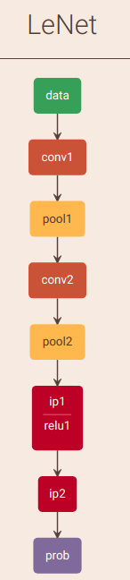
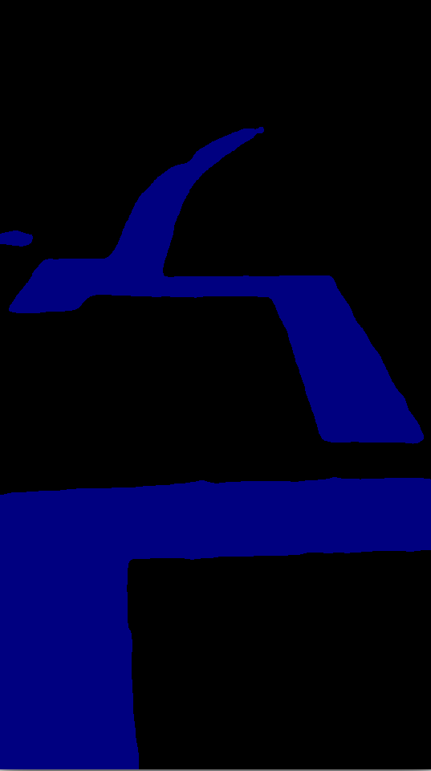

onnx2ncnn并在pc端调用ncnn模型
1、编译安装ncnn
首先应该在电脑上编译安装ncnn，配置安装过程可以参考笔者的这篇博文Linux下编译安装NCNN
2、确保已经转换好onnx模型
pytorch转onnx模型可以参考笔者的这篇 pytorch2onnx
3、onnx2ncnn
在经过步骤1的编译后，在目录ncnn/build/tools/onnx下，有onnx2ncnn这个可执行文件，这个文件是将模型onnx转化为ncnn模型。在ncnn/build/tools/caffe文件夹下有caffe2ncnn这个可执行文件，是将caffe模型转为ncnn，在ncnn/build/tools下有一个ncnn2mem 这个文件用来将ncnn模型进行加密的。onnx转化为ncnn模型时，我们需要使用的是onnx2ncnn这个可执行文件。
例如在笔者的这个模型中，使用
./onnx2ncnn lw50.onnx lw50.param lw50.bin4、ncnn模型说明
ncnn模型有两个文件一个.param文件，一个是.bin文件，前者是神经网络的结构，后者是神经网络的参数。下面以一个简单的神经网络结构来说明.param文件的意义。
4.1 LeNet为例
caffe模型文件内容为，关于caffe模型文件的解析可以参考笔者的这篇博文 tensorflow2caffe
name: "LeNet"
layer {
name: "data"
type: "Input"
top: "data"
input_param { shape: { dim: 1 dim: 1 dim: 28 dim: 28 } }
}
layer {
name: "conv1"
type: "Convolution"
bottom: "data"
top: "conv1"
param {
lr_mult: 1
}
param {
lr_mult: 2
}
convolution_param {
num_output: 20
kernel_size: 5
stride: 1
weight_filler {
type: "xavier"
}
bias_filler {
type: "constant"
}
}
}
layer {
name: "pool1"
type: "Pooling"
bottom: "conv1"
top: "pool1"
pooling_param {
pool: MAX
kernel_size: 2
stride: 2
}
}
layer {
name: "conv2"
type: "Convolution"
bottom: "pool1"
top: "conv2"
param {
lr_mult: 1
}
param {
lr_mult: 2
}
convolution_param {
num_output: 50
kernel_size: 5
stride: 1
weight_filler {
type: "xavier"
}
bias_filler {
type: "constant"
}
}
}
layer {
name: "pool2"
type: "Pooling"
bottom: "conv2"
top: "pool2"
pooling_param {
pool: MAX
kernel_size: 2
stride: 2
}
}
layer {
name: "ip1"
type: "InnerProduct"
bottom: "pool2"
top: "ip1"
param {
lr_mult: 1
}
param {
lr_mult: 2
}
inner_product_param {
num_output: 500
weight_filler {
type: "xavier"
}
bias_filler {
type: "constant"
}
}
}
layer {
name: "relu1"
type: "ReLU"
bottom: "ip1"
top: "ip1"
}
layer {
name: "ip2"
type: "InnerProduct"
bottom: "ip1"
top: "ip2"
param {
lr_mult: 1
}
param {
lr_mult: 2
}
inner_product_param {
num_output: 10
weight_filler {
type: "xavier"
}
bias_filler {
type: "constant"
}
}
}
layer {
name: "prob"
type: "Softmax"
bottom: "ip2"
top: "prob"
}
这个网络转换的.param模型文件为：
7767517
9 9
Input data 0 1 data 0=28 1=28 2=1
Convolution conv1 1 1 data conv1 0=20 1=5 2=1 3=1 4=0 5=1 6=500
Pooling pool1 1 1 conv1 pool1 0=0 1=2 2=2 3=0 4=0
Convolution conv2 1 1 pool1 conv2 0=50 1=5 2=1 3=1 4=0 5=1 6=25000
Pooling pool2 1 1 conv2 pool2 0=0 1=2 2=2 3=0 4=0
InnerProduct ip1 1 1 pool2 ip1 0=500 1=1 2=400000
ReLU relu1 1 1 ip1 ip1_relu1
InnerProduct ip2 1 1 ip1_relu1 ip2 0=10 1=1 2=5000
Softmax prob 1 1 ip2 prob 0=04.2 模型解析
第一行：版本信息
数值为此param文件的版本
第二行：层与数据交换结构数量
第一个数字：层（layer）的数量
第二个数字：数据交换结构（blob）的数量
第三行及以下：相关层的具体信息
input层比较特殊一点
前4个值的含义固定：
（1）层类型
（2）层名称
（3）输入数据结构数量（bottom blob）
（4）输出数据结构数量（top blob）
后面跟有三个不同类型的值，严格按照顺序排序：
（1） 网络输入层名（一个层可能有多个输入，则有多个网络输入层名）
（2） 网络输出层名（一个层可能有多个输出，则有多个网络输出层名）
（3）特殊参数(可能没有)： 一种是k=v的类型；另一种是k=len,v1,v2,v3….（数组类型）。该层在ncnn中是存放到paramDict结构中，不同类型层，各种参数意义不一样。
以第一个卷积层为例
层类型：Convolution
层名称：conv1
输入数据结构数量：1
输出数据结构数量（top blob）：1
网络输入层名：data
网络输出层名：conv1
特殊参数1：0=20，num_output: 20
特殊参数2：1=5，kernel_size: 5
特殊参数3：2=1，stride: 1
特殊参数4：3=1
特殊参数5：4=0
特殊参数6：5=1
特殊参数7：6=500，该层的参数量，551*20=500
4.3 可能出错的地方
在这一步还是有可能会出错，因为笔者的模型有上采样，所以有UpSampling，在ONNX中相应操作的参数是output scale，在NCNN中默认转成了output factor。而由于精度的问题，可能会导致feature map尺寸到后面就对不上，所以需要确认NCNN param中Interp的参数是否为正确的，如果不是就将这个参数相应的修改成相应的尺寸。
如笔者转换之后interp的size其实为0,0。而笔者正确的输出的尺寸是240*135，所以笔者直接将正确的尺寸写进去。
Interp 574 1 1 573 574 0=2 3=240 4=1355、在pc端调用ncnn模型验证结构
其实验证有两种方法，一种是世界将调用模型的C++代码文件放在原来ncnn源码的example文件下，重新编译，生成可执行文件，但这种方法如果自己想debug自己的代码会显得很不方便，所以我还是推荐自己新建一个C++工程，然后写CMakeLists.txt进行编译。笔者比较推荐的是在clion这个ide下完成C++工程。
5.1 CMakeLists.txt书写
话不多说自己上代码，自己的工程里面想使用ncnn都可以仿照笔者如下代码书写
cmake_minimum_required(VERSION 3.13)
project(lw50ncnn)
set(INC_DIR /usr/include
/usr/local/cuda/include #cuda的include位置 修改为正确的地方
/home/litchi/project/ncnn/build/install/include # ncnn的安装位置
)
set(LINK_DIR /usr/lib
/usr/lib/x86_64-linux-gnu/
/usr/local/cuda/lib64 #cuda的lib位置 修改为正确的地方
/home/litchi/project/ncnn/build/install/lib/libncnn.a #ncnn.a所在位置
)
set(OpenCV_DIR /usr/local/share/OpenCV) #opencv的位置
find_package(OpenCV REQUIRED)
find_package(OpenMP REQUIRED)
if(OPENMP_FOUND)
message("OPENMP FOUND")
set(CMAKE_C_FLAGS "${CMAKE_C_FLAGS} ${OpenMP_C_FLAGS}")
set(CMAKE_CXX_FLAGS "${CMAKE_CXX_FLAGS} ${OpenMP_CXX_FLAGS}")
set(CMAKE_EXE_LINKER_FLAGS "${CMAKE_EXE_LINKER_FLAGS} ${OpenMP_EXE_LINKER_FLAGS}")
endif()
include_directories(${INC_DIR}${OpenCV_INCLUDE_DIRS})
link_directories(${LINK_DIR}${OpenCV_LIBS})
set(CMAKE_CXX_STANDARD 14)
add_executable(lw50ncnn main.cpp)
target_link_libraries(lw50ncnn
${OpenCV_LIBS}
${LINK_DIR}
)5.2 调用模型代码
main.cpp代码如下，其实代码还是很好读懂。主要需要注意的有如下两点
1、我们在对图片进行归一化处理的时候是对三个通道分别进行减去均值除以方差，在python中我们经常写为：
def prepare_img(img):
IMG_SCALE = 1./255
IMG_MEAN = np.array([0.485, 0.456, 0.406]).reshape((1, 1, 3))
IMG_STD = np.array([0.229, 0.224, 0.225]).reshape((1, 1, 3))
return (img * IMG_SCALE - IMG_MEAN) / IMG_STD但是在ncnn中已经写好的一个函数是 in.substract_mean_normalizeS(mean_vals, std_vals),所以相应的std_vals的值应该为方差分之一。
const float mean_vals[3] = {123.675f, 116.28f, 103.53f};
const float std_vals[3] = {1/58.395f, 1/57.12f, 1/57.375f};笔者的这个数据是imagenet这个数据集的均值方差
2、在opencv中Mat数据是H*W*C，但是在ncnn中Mat的数据是C*H*W，所以第i行，第j列，第k通道的数值的取法为：
out[k*out.h*out.w+i*out.w+j]#include
#include
#include
#include
#include
#include
#include
#include "/home/litchi/project/ncnn/build/install/include/ncnn/platform.h"
#include "/home/litchi/project/ncnn/build/install/include/ncnn/net.h"
using namespace std;
#if NCNN_VULKAN
#include "gpu.h"
#endif // NCNN_VULKAN
//将ncnn的mat类型数据转化为opencv的mat类型数据，第三个通道为前两个通道中较大的那个
vector> ncnntovec(const ncnn::Mat &out){
//构造一个
cv::Mat cvimage = cv::Mat();
//CV_8UC3中的8表示8位、浮点数类型、3表示三个通道,CV_32FC3,CV_8UC3
cvimage.create(out.h,out.w,CV_32FC3);
for(int i=0;i(i,j)[0]=float(out[0*out.h*out.w+i*out.w+j]);
cvimage.at(i,j)[1]=float(out[1*out.h*out.w+i*out.w+j]);
// std::cout<(i,j)<> armax(out.h,vector(out.w));
for(int i=0;i(i,j)[0]>cvimage.at(i,j)[1]){
std::cout<(i,j)<> &armax){
cv::Mat cvimg=cv::Mat();
cvimg.create(armax.size(),armax[0].size(),CV_8UC3);
for(int i=0;i(i,j)=(0,0,0);
}
else{
cvimg.at(i,j)[0]=128;
cvimg.at(i,j)[1]=0;
cvimg.at(i,j)[2]=0;
}
}
}
cv::Mat recvimg=cv::Mat();
//恢复之前的size
cv::resize(cvimg,recvimg,cv::Size(540,960),cv::INTER_CUBIC);
return recvimg;
}
//为了对比读入数据
long int cvsum(const cv::Mat &img){
float sum=0;
std::cout<(i,j)[k]);
std::cout<(i,j)[k])<<" ";
}
std::cout<> armax=ncnntovec(out);
cv::Mat cvimg=vectocv(armax);
return cvimg;
}
int main(int argc, char** argv)
{
if (argc != 2)
{
fprintf(stderr, "Usage: %s [imagepath]\n", argv[0]);
return -1;
}
const char* imagepath = argv[1];
cv::Mat m = cv::imread(imagepath);
if (m.empty())
{
fprintf(stderr, "cv::imread %s failed\n", imagepath);
return -1;
}
#if NCNN_VULKAN
ncnn::create_gpu_instance();
#endif // NCNN_VULKAN
cv::Mat preimg=detect(m);
cv::imshow("predict",preimg);
cv::waitKey(0);
#if NCNN_VULKAN
ncnn::destroy_gpu_instance();
#endif // NCNN_VULKAN
return 0;
} 渲染问题，空白的include部分分别为：
#include <iostream>
#include <stdio.h>
#include <algorithm>
#include <vector>
#include <opencv2/core/core.hpp>
#include <opencv2/opencv.hpp>
#include <opencv2/highgui/highgui.hpp>
